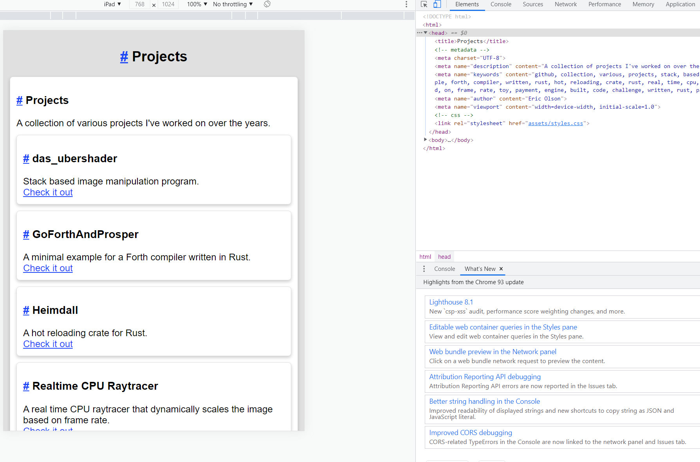

Today I'll be adding in a Projects page that contains a list of all Github projects I want.
There's a new projects section under the config that contains a list of all projects I want displayed. This was added a while back.
// config.rs
#[derive(Clone, Debug, PartialEq, Serialize, Deserialize)]
pub struct Config {
pub about_me: String,
pub about_me_keywords: Vec<String>,
pub about_me_summary: String,
pub author: String,
pub github: Option<String>,
pub index_keywords: Vec<String>,
pub index_summary: String,
pub index_title: String,
pub linked_in: Option<String>,
pub projects: Vec<Project>,
#[serde(default)]
pub theme: Theme,
pub twitter: Option<String>,
}
#[derive(Clone, Debug, PartialEq, Serialize, Deserialize)]
pub struct Project {
pub title: String,
pub description: String,
pub url: String,
}
...
Then in the builder module I added a new method to generate a project page, exactly like the About Me page.
// builder/projects_page.rs
use crate::{
parser::{ContentIr, LinkType, Page},
Context, Item,
};
use std::sync::Arc;
pub fn build(context: &Arc<Context>) -> Page {
let projects = ContentIr::section(
"Projects".into(),
vec![
ContentIr::Text {
text: "A collection of various projects I've worked on over the years.".into(),
},
map_projects(context),
],
);
let page_contents = vec![
ContentIr::title("Projects".into(), "projects".into()),
projects,
];
Page {
contents: Item {
location: None,
item: ContentIr::Div {
contents: page_contents,
},
},
file_name: "projects.html".into(),
keywords: map_keywords(context),
summary: "A collection of projects I've worked on over the years.".into(),
title: "Projects".into(),
}
}
fn map_projects(context: &Arc<Context>) -> ContentIr {
let projects = context
.config
.projects
.iter()
.map(|p| {
ContentIr::section(
p.title.clone(),
vec![
ContentIr::text(p.description.clone()),
ContentIr::Link {
description: "Check it out".into(),
url: p.url.clone(),
link_type: LinkType::Regular,
},
],
)
})
.collect();
ContentIr::Div { contents: projects }
}
fn map_keywords(context: &Arc<Context>) -> Vec<String> {
let mut keywords = vec![
"github".into(),
"collection".into(),
"various".into(),
"projects".into(),
];
context.config.projects.iter().for_each(|p| {
keywords.append(
&mut p
.description
.split_ascii_whitespace()
.map(|c| c.to_lowercase().replace(".", "").to_string())
.filter(|c| {
c != "and" && c != "that" && c != "the" && c != "a" && c != "for" && c != "in"
})
.collect(),
)
});
keywords.dedup();
keywords
}
What it does is iterates over all the projects I've added, making a bunch of sections, combining the descriptions to make keywords and spits out a page.
It isn't the sexiest, but it will suffice for now. At this stage in the game I'm getting antsy to work on deploying it, so I'll be focusing on wrapping things up as fast as possible to do that.
Here's the final render:
